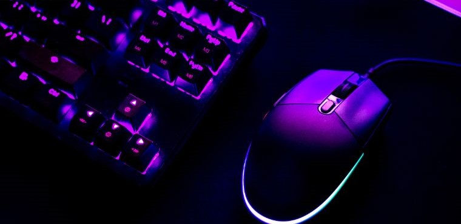

1- Mouse Comum
Este Mouse pode ser usado normalmente em quaisquer computadores e notebooks, podendo até mesmo em televisões. Sua validade dura em cerca de 2 a 4 anos dependendo da marca escolhida.

2- Mouse Bluetooth
Sendo utilizado via sem fio, e usando um pendrive do mouse, é possível usá-lo. Dura de 3 a 6 meses variando o modelo.

3- Mouse Gamer
O mais conhecido no mercado pelos Gamers e pessoas que acompanham conteúdos Geeks. Este dura por volta de 9 meses se ajustado no modo típico.
